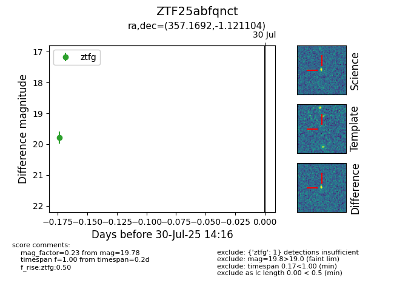

Target ZTF25abfqnct at 2025-07-30 14:16, see:
FINK: fink-portal.org/ZTF25abfqnct
Lasair: lasair-ztf.lsst.ac.uk/objects/ZTF25abfqnct
ALeRCE: alerce.online/object/ZTF25abfqnct
alt names
ZTF25abfqnct (ztf,fink)
coordinates:
equatorial (ra, dec) = (357.1692,-1.12110)
galactic (l, b) = (90.2522,-59.94932)
photometry
last ztfg=19.78
1 ztfg detections
